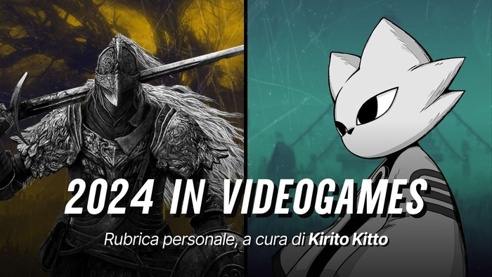

Year in Videogames 2024
Benvenuti nella quarta edizione della rubrica Year in Videogames, un recap annuale dei titoli giocati nel corso dell’anno per ricordare i punti più alti (e bassi) della mia carriera videoludica.

Statistiche:
- Titoli giocati: 41
- Titoli completati: 27
- Media voti titoli completati: 7.45
Premi
- Great Experience
- Photo Mode
- Above Expectations
- Below Expectations
- Music Memory
- Multiplayer Award
- Honorable Mention
- Other Games
Game of the Year Award. Titoli con una qualità realizzativa eccellente o il cui viaggio in loro compagnia è stato memorabile.
Great Experience Award. Titoli che non hanno vinto il premio “Game of the Year” ma che ritengo memorabili per qualità o impatto emotivo.
- Elden Ring: Shadow of the Erdtree
- Nine Sols
- Silent Hill 2
- Dark Souls III
Photo Mode Award
- Elden Ring: Shadow of the Erdtree
- Wild Hearts
- Ghost of Tsushima
- Albatroz
- Black Myth Wukong
Screenshots
Above Expectations. Titoli che mi hanno divertito molto più del previsto.
- Nine Sols
- MotoGP 24
- New Star GP
- Eldest Souls
- Wild Hearts
- Clone Drone in the Danger Zone
Below Expectations. Titoli che non hanno raggiunto le mie aspettative (forse ingiustamente troppo alte).
- Hellblade 2
- Persona 3 Reload
- Animal Well
Soundtrack Award. Titoli con una colonna sonora nel complesso eccellente, con diverse OST memorabili.
Music Memory Award. Titoli che non hanno vinto il “Soundtrack Award” ma presentano una o più OST memorabili.
- Albatroz
- Horizon: Zero Dawn
- Detroit: Become Human
- Elden Ring: Shadow of the Erdtree
Multiplayer Award
- Inazuma Eleven: Victory Road
Honorable Mentions. Titoli che non sono riusciti a vincere un premio ma meritevoli di una mezione.
- Detroit: Become Human
- Horizon: Zero Dawn
- Horizon: Forbidden West
- The Legend of Zelda: Link’s Awakening
- The Legend of Zelda: Echoes of Wisdom
- Balatro
- Blasphemous
- Another Crab’s Treasure
Titoli che non ho finito e con valutazione rimandata: Immortals Fenyx Rising, Rain World, Factorio Age of Calamity DLC, Metaphor: Re Fantazio.
Altri titoli che ho giocato ma che non hanno vinto un premio: Mouthwashing, Pacific Drive, Duck Detective: Secret Salami, Chasing the Unseen, Animal Well, Professor Layton and the Last Specter, The Talos Principle, Microsoft Flight Simulator 2024, Call of Duty: Black Ops 6, Paper Mario: The Thousand-Year Door.